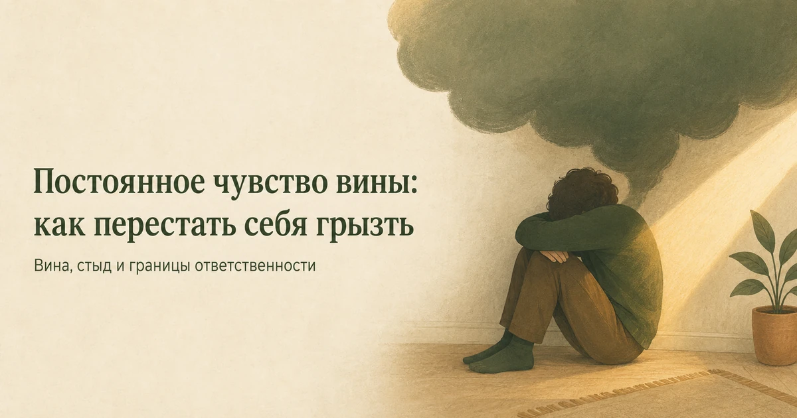
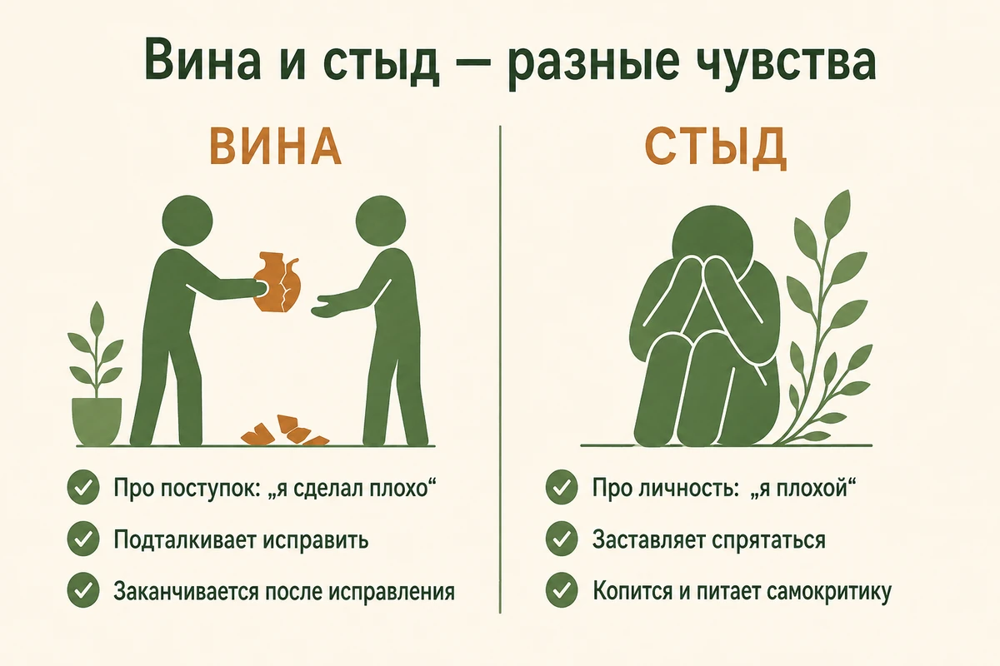
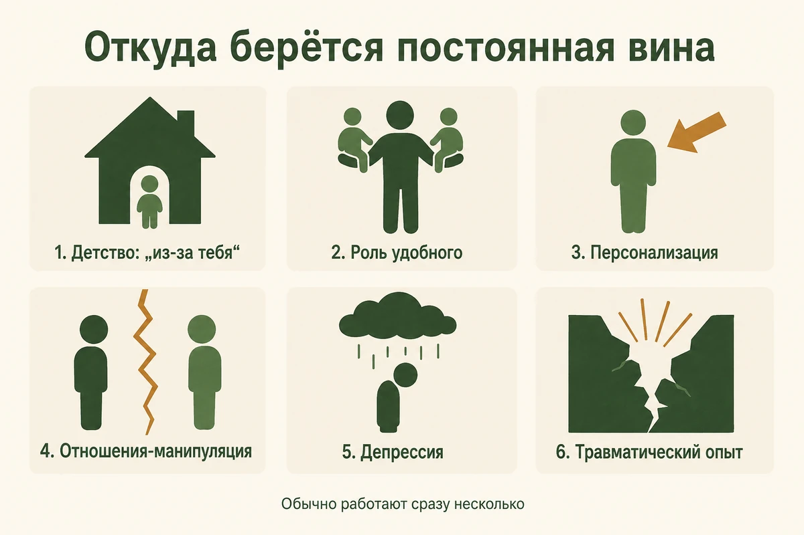
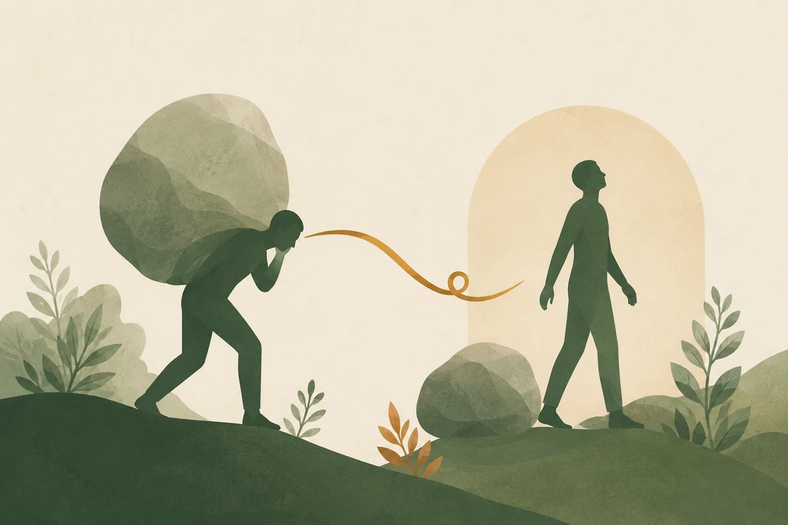
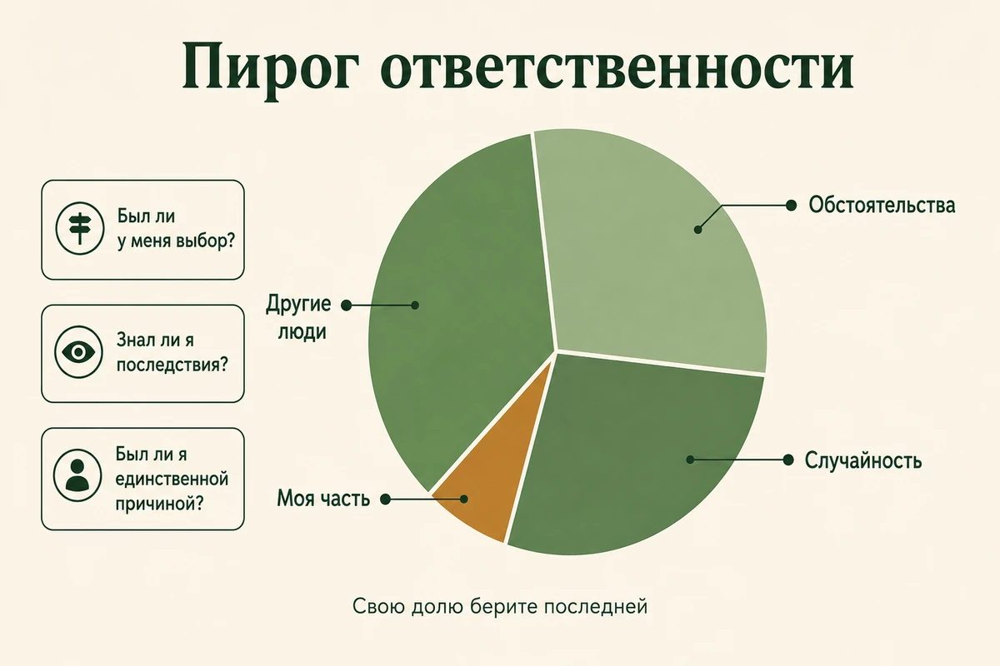
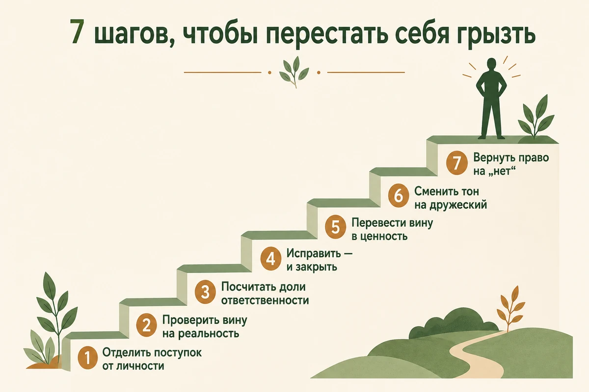

Главная → Блог → Постоянное чувство вины
Постоянное чувство вины: 7 шагов, чтобы перестать себя грызть
Обновлено: 26.08.2026 · 15 минут чтения

Чувство вины — нормальный сигнал совести: он появляется, когда мы причинили кому-то вред, и подталкивает это исправить. Проблема начинается, когда вина перестаёт выключаться и превращается в фон, на котором проходит жизнь: вы виноваты за отказ, за отдых, за чужое настроение и за то, что вообще существуете. При хронической вине переживание обычно несоразмерно реальному вреду: человек винит себя и после того, как всё исправил, или берёт ответственность за то, что от него не зависело. Это не приговор характеру, а привычка, которую можно разобрать по частям. Ниже — чем вина отличается от стыда, как отличить здоровую вину от токсичной и что делать, когда грызёт.
- Вина и стыд: почему это разные чувства
- Здоровая вина и токсичная: как отличить
- Почему я виноват, хотя ничего не сделал
- Как постоянная вина проявляется
- Откуда берётся хроническое самообвинение
- Три частых случая ложной вины
- Что делать прямо сейчас, когда грызёт
- 7 шагов, чтобы перестать себя грызть
- Как избавиться от вины за прошлое
- Как не брать на себя чужую вину
- Что не работает
- Когда пора к специалисту
- Частые вопросы
Вина и стыд: почему это разные чувства
Вина говорит о поступке, стыд — о личности. «Я поступил плохо» и «я плохой» ощущаются похоже, но ведут в противоположные стороны. Вина показывает на конкретное действие, а значит, оставляет выход: извиниться, исправить, поступить иначе. Стыд обвиняет вас целиком — исправлять в нём нечего, поэтому он чаще вызывает желание спрятаться или защищаться, а иногда оборачивается раздражением и ответной агрессией.
Это различение — не игра слов, а рабочий инструмент. Люди, которые в трудной ситуации чувствуют вину, чаще идут навстречу и чинят отношения. Те, кого накрывает стыдом, чаще уходят в изоляцию и самокритику — и, парадоксально, реже исправляют сделанное, потому что все силы уходят на защиту от невыносимого «я плохой».
| Вина | Стыд | |
|---|---|---|
| О чём | О поступке: «я сделал плохо» | О себе: «я плохой» |
| Что делает | Подталкивает исправить | Заставляет спрятаться |
| Есть ли выход | Да: извинение, действие, вывод | Нет: чинить «личность» не за что взяться |
| Чем заканчивается | Проходит после исправления | Копится и питает самокритику |

Если вы узнаёте в себе именно второе — постоянный внутренний обвинитель, который говорит не «ты ошибся», а «с тобой что-то не так», — это ближе к теме самооценки и внутреннего критика. Работать с ним отдельно эффективнее, чем пытаться «перестать виниться».
Здоровая вина и токсичная: как отличить
Здоровая вина — это сигнал, у которого есть адресат, размер и конец. Вы знаете, что именно сделали, кому от этого стало плохо и что можно предпринять. После извинения или исправления она затихает — так и должно работать.
Термин «токсичная вина» пришёл из популярной психологии, а не из классификации болезней: отдельного диагноза с таким названием не существует. Обозначают им вину хроническую, несоразмерную ситуации или возникающую там, где человек не несёт реальной ответственности. Устроена она иначе: размытая («я вообще плохой друг»), несоразмерная (три дня переживаний из-за неотвеченного сообщения), бесконечная (извинились пять раз, легче не стало) и часто вообще не связана с вредом — вы виноваты просто за то, что у кого-то рядом плохое настроение.
| Здоровая вина | Токсичная вина | |
|---|---|---|
| Повод | Конкретный поступок | Само ваше существование, отдых, отказ |
| Размер | Соразмерна вреду | Не связана с масштабом события |
| Куда ведёт | К исправлению | К самонаказанию и избеганию |
| Когда кончается | После того, как вы починили | Не кончается, сколько ни извиняйся |
Почему я постоянно чувствую себя виноватым, хотя ничего не сделал
Потому что вина запускается не фактом вреда, а привычкой считать себя причиной чужого состояния. Если такая привычка сложилась, повод найдётся всегда: недовольное лицо коллеги, короткий ответ в переписке, чей-то тяжёлый вздох в трубку. Событие тут — только спусковой крючок, а сама реакция готова заранее.
Чаще всего за «виной без причины» стоит одно из пяти:
- привычка отвечать за эмоции окружающих, усвоенная в детстве;
- персонализация — когнитивное искажение, при котором вы назначаете себя причиной чужих событий;
- высокий фон тревоги: тревожная психика сканирует, где вы могли ошибиться, и находит;
- депрессивное состояние, при котором вина становится чрезмерной и не связана с реальной ответственностью;
- отношения, где вину вам передают намеренно.
«Я весь выходной пролежал с книгой — и весь день чувствовал себя виноватым, хотя никому ничего не должен был».
Здесь нет ни пострадавшего, ни вреда — есть выученное правило «отдых надо заслужить». Вина в такой ситуации сообщает не о поступке, а о правиле, по которому вы живёте. Разбирать имеет смысл правило.
Разница принципиальная: вину за поступок можно закрыть действием, а вину без повода действием не закрыть — она вернётся к следующему поводу. Поэтому работать приходится не с эпизодом, а с механизмом — о нём ниже.
Как постоянная вина проявляется
Хроническая вина редко ощущается как отдельная эмоция — чаще она маскируется под характер и «просто такой я человек».
В мыслях
Бесконечная прокрутка разговоров: «зря я это сказал», «надо было иначе». Ночное перечитывание переписки. Мысленные извинения перед людьми, которые давно всё забыли. Если такие круги знакомы, посмотрите разбор про навязчивые мысли — механизм руминации там тот же.
В теле
Тяжесть в груди и животе, ком в горле, ощущение, будто «сжимает». Трудно засыпать: вечером внутренний прокурор получает слово. Хроническое напряжение в плечах и челюсти.
В поведении
Постоянные извинения по любому поводу, включая «извини, что я пишу». Неспособность отказать. Отдых только «заслуженный», а лучше вообще никакого. Согласие на условия, которые вам не подходят. Избегание людей, перед которыми чувствуете вину, — что делает вину только сильнее.
Откуда берётся хроническое самообвинение
У постоянной вины обычно не одна причина, а несколько наслоившихся.
- Детство, где ребёнка назначали причиной родительских чувств. «Из-за тебя у мамы болит голова», «я столько для тебя сделала» — и ребёнок усваивает, что чужие эмоции регулирует он. Это частая, хотя и не единственная опора взрослой вины, подробнее — в статье про детские травмы и их следы.
- Роль «удобного» и раннего взрослого. Если в семье вы были тем, кто мирит, утешает и не создаёт проблем, ответственность за чужое состояние стала автоматической.
- Персонализация. Когнитивное искажение, при котором человек считает себя причиной событий, к которым имел мало отношения. Проверка таких мыслей на фактах — базовая работа когнитивно-поведенческой терапии.
- Отношения, где вина — рычаг управления. Обиженное молчание, «ты меня довёл», перекладывание ответственности. Это узнаваемый почерк токсичных отношений: вина здесь не ваша реакция, а чужой инструмент.
- Депрессия. Стойкое чувство вины и ощущение себя обузой — один из её признаков, а не свойство характера. При депрессии чувство вины становится чрезмерным и перестаёт соответствовать реальной ответственности, поэтому спорить с конкретным поводом бесполезно — работать нужно с состоянием.
- Травматический опыт. После потери, аварии или насилия психика часто выбирает самообвинение — оно страшное, но возвращает ощущение контроля.

Три частых случая ложной вины
Вина выжившего. «Почему он, а не я», «я мало сделал». Она появляется после смерти близкого, увольнения коллег, любой беды, которая обошла вас стороной. Это не оценка вашего поведения, а способ психики справиться со случайностью — подробный разбор в статье о том, как пережить смерть близкого.
Вина за чужие чувства. Вы отказали — человек расстроился. Расстройство реально, вред — нет. Эти две вещи путаются почти всегда, и на этой путанице держится большинство манипуляций.
Вина после насилия. «Я сам виноват, что оказался там», «надо было уйти раньше». Самообвинение здесь — типичная реакция, а не правда: ответственность за насилие лежит на том, кто его совершил. Такую вину почти невозможно разобрать в одиночку, и это как раз тот случай, когда нужен специалист.

Что делать прямо сейчас, когда грызёт
Когда вина накрывает волной, спорить с ней бесполезно — сначала нужно сбавить накал.
- Назовите чувство вслух. «Сейчас я чувствую вину». Названная эмоция теряет часть силы: вы перестаёте быть внутри неё и получаете точку опоры снаружи.
- Задайте три вопроса. Был ли у меня реальный выбор? Знал ли я последствия заранее? Был ли я единственной причиной? Отрицательный ответ хотя бы на один — вина не ваша целиком, и дальше стоит считать долю, а не казнить себя.
- Решите, есть ли действие. Если можно исправить — запишите конкретный шаг и срок. Если нельзя — скажите себе прямо: «действия нет, есть только переживание». Это отделяет совесть от самонаказания.

7 шагов, чтобы перестать себя грызть
- Отделите поступок от личности. Переформулируйте «я ужасный друг» в «я не позвонил, когда обещал». Первое — приговор без выхода, второе — задача с решением. Эта замена звучит просто, но именно она переводит стыд обратно в вину, с которой можно работать.
- Проверьте вину на реальность. Выпишите, в чём именно вы виноваты, максимально конкретно — без «вообще» и «всегда». Часто на этом шаге обнаруживается, что фактов нет, а есть ощущение.
- Посчитайте доли ответственности. Приём из КПТ: перечислите все факторы, повлиявшие на исход — обстоятельства, других людей, случайность, — и раздайте им проценты. Свою долю берите последней. У людей с хронической виной собственная доля нередко оказывается заметно меньше, чем ощущалась в момент переживания.
- Если вред реальный — исправьте и закройте. Извинение без оправданий, конкретное действие, где возможно — компенсация. И на этом всё: возвращаться к теме снова и снова — уже не ответственность, а самонаказание, которое ничего не чинит.
- Если исправить нельзя — переведите вину в ценность. Спросите: что этот случай говорит о том, что для меня важно? И как я поступлю в похожей ситуации теперь? Такой разворот от прошлого к ценностям и поступкам — сердцевина терапии принятия и ответственности (ACT).
- Смените тон на дружеский. Спросите себя, что вы сказали бы другу, который пришёл с этой же историей. Почти всегда ответ будет мягче и точнее, чем ваш внутренний прокурор. Тренировка этого тона — предмет терапии, сфокусированной на сострадании (CFT): самокритика не делает нас лучше, она лишь съедает силы, нужные на исправление.
- Восстановите право на «нет». Начните с малого отказа в неважной ситуации и переживите волну вины, ничего не делая с ней. Интенсивность переживания обычно снижается, если не подкреплять его оправданиями и уступками, — и это лучшее доказательство: отказ не разрушает отношения, а вина после него оказывается привычкой, а не фактом.

Разобрать вину в одиночку тяжело именно потому, что судья и подсудимый — один человек. ИИ-психолог помогает посмотреть со стороны: задаёт вопросы про факты и доли ответственности, замечает, где вы говорите о поступке, а где уже приговариваете себя. Анонимно и без осуждения: переписка остаётся в вашем браузере и не сохраняется на наших серверах. При тяжёлом или затяжном состоянии важно обратиться к психологу или психотерапевту.
Начать разговор бесплатноКак избавиться от чувства вины за прошлое
Прошлое не переигрывается, поэтому цель не «перестать чувствовать», а перевести вину из наказания в поступок. Помогает разобрать эпизод по семи вопросам — письменно, а не в голове: в голове он идёт по кругу.
- Что именно произошло? Только факты, без оценок и без «я разрушил всё».
- Что тогда было в моей власти? Отделите свои решения от обстоятельств и чужих поступков.
- Что я знал в тот момент? Судить себя знанием, которое появилось позже, — самая частая ошибка. Тогда вы не знали, чем всё кончится.
- Что можно сделать сегодня? Извиниться, вернуть, поговорить, помочь. Если действие есть — назначьте ему срок.
- Что изменить уже нельзя? Назовите это прямо. Непризнанная невозможность и держит человека в круге.
- Чему меня это научило? Здесь вина превращается в ценность: она показывает, что для вас важно, и как вы поступите теперь.
- Где заканчивается ответственность и начинается самонаказание? Ответственность заканчивается на исправленном; всё, что идёт дальше, ничего не чинит.
Отдельный случай — вина перед человеком, которого больше нет. Извиниться некому, и именно поэтому она особенно упорна. Работает то же самое, но с поправкой: адресатом становится не человек, а ваше будущее поведение. Подробнее — в разборе о том, как пережить смерть близкого.
Как не брать на себя чужую вину
Есть люди, для которых ваша вина — удобный способ добиваться своего. Приёмы узнаваемые: обиженное молчание вместо разговора, «после всего, что я для тебя сделал», перевод темы на ваши прошлые ошибки, обобщения «ты всегда».
Работает здесь не спор, а разделение двух фактов. Первый: человеку неприятно ваше решение. Второй: вы не причинили ему вреда. Первое — его чувство, второе — ваша ответственность, и они не связаны автоматически.
«Я понимаю, что тебе это неприятно. Я всё равно не смогу приехать в субботу».
Ни оправданий, ни спора о том, кто прав. Признали чувство — оставили решение. Если после такой фразы вина всё равно накрывает, это хороший сигнал: она про вашу привычку, а не про этот разговор.
«Мама вздыхает в трубку: „Ну конечно, ты занят, куда уж нам“. И весь вечер я чувствую себя предателем».
Разберите на части. Факт: вы не приехали. Факт: маме грустно. Не факт: что вы обязаны были приехать. Её грусть — её чувство, и оно может быть настоящим; ваш отказ при этом не является вредом. Вина появляется в месте, где эти две вещи склеены в одну.
Если такие сцены — норма ваших отношений, а не редкий эпизод, посмотрите 12 признаков токсичных отношений: постоянная вина без причины стоит в этом списке одной из первых.
Что не работает
- Самонаказание. Лишить себя отдыха, удовольствия, сна — это не искупление, а способ почувствовать, что вы «заплатили». Пострадавшему от этого не легче ни на грамм.
- Извиняться снова и снова. Повторные извинения — форма поиска утешения: вы просите другого человека подтвердить, что всё в порядке. Облегчение длится минуты, а привычка усиливается.
- Избегать того, перед кем виноваты. Чем дольше не звоните, тем больше вина, тем страшнее звонить. Круг замыкается.
- Приказ «просто перестань себя винить». Эмоции не выключаются по команде; от запрета чувствовать вина уходит в фон и возвращается ночью.
- Заглушать алкоголем. Спиртное на пару часов притупляет самокритику, а на следующий день возвращает её усиленной — механизм разобран в статье про алкоголь и тревогу.
Когда пора к специалисту
Обратиться к психологу или психотерапевту стоит, если:
- вина держится больше двух недель и окрашивает почти всё;
- она сопровождается безнадёжностью, потерей интереса и постоянной усталостью;
- вы виноваты за события, к которым объективно не имели отношения;
- вина связана с потерей, аварией, насилием — с тем, что сложно выдерживать в одиночку;
- появляются мысли, что близким было бы лучше без вас, — это повод обратиться срочно.
Из доказательных подходов с виной и самокритикой работают КПТ (проверка мыслей и распределение ответственности), CFT (тренировка сострадательного отношения к себе) и схема-терапия, если самообвинение выросло из детских сценариев и повторяется всю жизнь. Бесплатные варианты помощи в России тоже есть — от кабинета в поликлинике по ОМС до кризисных линий.
Частые вопросы
Чем чувство вины отличается от стыда?
Вина — про поступок: «я сделал плохо». Стыд — про личность целиком: «я плохой». Разница не в силе переживания, а в направлении: вина показывает на конкретное действие, которое можно исправить, а стыд обвиняет вас самого, и исправлять в нём нечего. Поэтому вина чаще подталкивает извиниться и починить, а стыд — спрятаться, оправдаться или напасть в ответ.
Почему я чувствую вину, когда ни в чём не виноват?
Чаще всего работает искажение, которое в КПТ называют персонализацией: человек берёт на себя ответственность за то, что от него не зависело. Такая привычка обычно родом из детства, где ребёнка назначали причиной родительских чувств, или из отношений, где вину использовали как рычаг управления. Проверьте три вещи: был ли у вас реальный выбор, знали ли вы последствия заранее и были ли вы единственной причиной. Если хотя бы на один вопрос ответ «нет» — вина не ваша целиком.
Как избавиться от чувства вины за прошлое, которое уже не исправить?
Прошлое действительно не переигрывается, поэтому цель другая: перевести вину из наказания в поступок. Признайте вред честно и без преувеличения, сделайте то, что ещё возможно сегодня — извинитесь, компенсируйте, поговорите. Если адресата больше нет, вина превращается в ориентир на будущее: что этот случай говорит о ваших ценностях и как вы поступите в похожей ситуации теперь. Самонаказание никому не возвращает утраченного и лишь удерживает вас в прошлом.
Постоянное чувство вины — это депрессия?
Не обязательно, но стойкое чувство вины и ощущение себя обузой входят в число признаков депрессии, наряду со сниженным настроением, потерей интереса, усталостью и нарушениями сна. Если вина держится больше двух недель, окрашивает почти всё и сопровождается безнадёжностью — это повод пройти скрининговый опросник PHQ-9 и обратиться к врачу или психотерапевту, а не искать очередную причину себя осудить. Опросник не ставит диагноз — он показывает выраженность симптомов.
Как перестать чувствовать вину, когда отказываешь людям?
Вина за отказ обычно означает не то, что вы поступили плохо, а то, что вы не привыкли иметь право на «нет». Разделите два разных факта: человеку может быть неприятно ваше решение — и при этом вы не причинили ему вреда. Отказ без грубости не является проступком, а чужое разочарование не автоматически ваша ответственность. Помогает короткая формула без оправданий: «не смогу» плюс, если хотите, одна альтернатива.
Почему я чувствую вину, когда отдыхаю?
Вина за отдых почти никогда не про отдых — она про усвоенное правило «сначала заслужи». Такое правило складывается там, где ценность человека измерялась пользой: в семье, где хвалили только за результат, или в среде, где занятость считается доблестью. Проверить его просто: спросите себя, кому именно стало хуже оттого, что вы полежали с книгой. Если пострадавшего нет, вины тоже нет — есть привычка требовать с себя оплаты за покой.
Как перестать винить себя перед родителями?
Разделите заботу и долг без края. Вы можете быть внимательным взрослым ребёнком и при этом не отвечать за настроение родителей, их одиночество и несбывшиеся ожидания. Помогает договориться с собой о конкретном, выполнимом вкладе — звонки, помощь, визиты в реальном объёме — и считать его достаточным. Если после каждого разговора остаётся ощущение, что вы что-то должны, но непонятно что, речь чаще всего идёт не о вашей вине, а о привычном способе общения в семье.
Что делать, если человек намеренно вызывает у меня чувство вины?
Не спорьте о том, кто прав, — на этом поле выигрывает тот, кто давит. Разделяйте два факта: человеку неприятно ваше решение, и при этом вы не причинили ему вреда. Вслух это звучит коротко: «Я понимаю, что тебе это неприятно, и всё равно не смогу». Признали чувство, оставили решение, не оправдываетесь. Если обиженное молчание и напоминания о былых заслугах — постоянный способ добиваться от вас своего, это уже вопрос не одной ситуации, а самих отношений.
Почему жертвы насилия часто винят себя?
Самообвинение после насилия — типичная реакция психики, а не признак реальной вины. Считать, что беда случилась из-за твоей ошибки, страшно, но это возвращает иллюзию контроля: «если я виноват, значит, в следующий раз смогу предотвратить». Кроме того, вину часто прямо навязывает сам агрессор. Ответственность за насилие всегда лежит на том, кто его совершил, и работать с такой виной лучше со специалистом, а не в одиночку.
Читать также
- Как повысить самооценку: 8 шагов, которые реально работают — если внутренний критик звучит громче фактов.
- Детские травмы: 7 следов во взрослой жизни — откуда чаще всего растёт привычка чувствовать себя виноватым.
- Токсичные отношения: 12 признаков и как из них выйти — когда вину вам передают намеренно.
- Навязчивые мысли: почему появляются и 7 способов их остановить — если вина крутится по кругу и не отпускает.
- Депрессия: 10 признаков, что делать и когда идти к врачу — если вина идёт вместе с апатией и безнадёжностью.
Материал подготовлен командой AI Therapist и основан на доказательных подходах к работе с виной и самокритикой — когнитивно-поведенческой терапии (КПТ), терапии принятия и ответственности (ACT) и терапии, сфокусированной на сострадании (CFT). Статья носит просветительский характер и не заменяет консультацию специалиста.
Источники: Американская психологическая ассоциация (APA) — в чём разница между виной и стыдом, NHS — симптомы депрессии у взрослых (чувство вины в перечне признаков), NICE NG222 — Depression in adults: treatment and management, PHQ Screeners — официальная страница опросника PHQ-9, NHS — Raising low self-esteem. Источники проверены 26.08.2026.
Редакционная проверка: команда AI Therapist, 26.08.2026. Материал не проверялся практикующим специалистом — как только рецензент появится, мы укажем его имя и квалификацию здесь.
Кто отвечает за содержание сайта и по каким правилам мы готовим материалы — на странице о проекте.